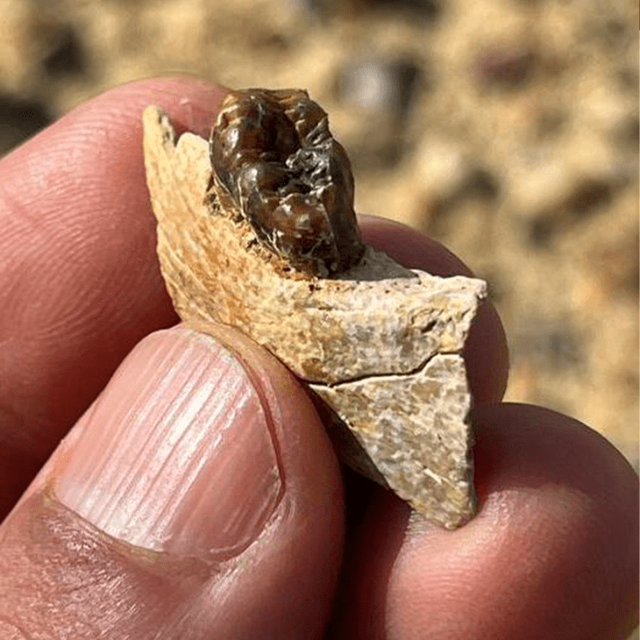

As an inquisitive species, humans are interested in figuring out where we came from. Paleontological evidence has shown that the great ape lineage of “hominoids,” which includes gorillas, chimps, orangutans, and us, diverged from monkeys more than 25 million years ago. But when modern apes took their own evolutionary path has remained murky.
To date, our focus has been East Africa (namely, Kenya and Uganda), where most of the oldest great ape fossils have been found. That might have been misguided, though, as paleontologists from Egypt and the United States recently discovered a lower jawbone of an ape in rock deposits called Wadi Moghra in northern Egypt, a finding they just published in a new paper in Science.

RARE FIND: A close-up look at a Masripithecus moghraensis mandibular fragment with a tooth showing, at the moment of discovery. Photo by Professor Hesham Sallam.
The jawbone’s unique combination of dental traits— “large canine and third lower premolar relative to posterior molar size-length, relatively low-crowned and highly crenulate molars, etc.”—merited a new genus and species. Dubbed Masripithecus moghraensis (“Egyptian ape from Moghra”), the ancient ape dates to about 17 or 18 million years ago, or the Early Miocene.
“[The] findings on Masripithecus confirm that paleontologists might have been looking for crown-hominoid ancestors in the wrong place,” paleontologists David Alba and Júlia Arias-Martorell wrote in a related Perspective.
To figure out where M. moghraensis fits into the family tree of humans, lead study author Shorouq F.Al-Ashqar from Mansoura University and colleagues modeled its anatomy and age relative to other known fossil ancestors. It looks to be the closest known relative of the lineage that spawned modern apes, including humans, closer even than the species found in East Africa.
Read more: “Portrait of the Human as a Young Hominin”
During the Early Miocene, Afro-Arabia was connected to Eurasia as their continental plates drifted together, creating the potential for migration between the continents. Either way, by the Middle Miocene, apes were geographically widespread and diverse beyond Africa. Indeed, concluded the study authors, “hominoid populations in northeastern Afro-Arabia were geographically and ecologically best positioned to disperse into Eurasia as soon as marine barriers diminished.”
Based on their models, the researchers propose a migration of apes from Egypt, skirting northward around what is now the Red Sea, then dispersing westward into Europe and eastward into the Middle East.
Whatever the route, we may all have deeper Egyptian roots than we ever imagined. 
Enjoying Nautilus? Subscribe to our free newsletter.
Lead image: Mauricio Antón